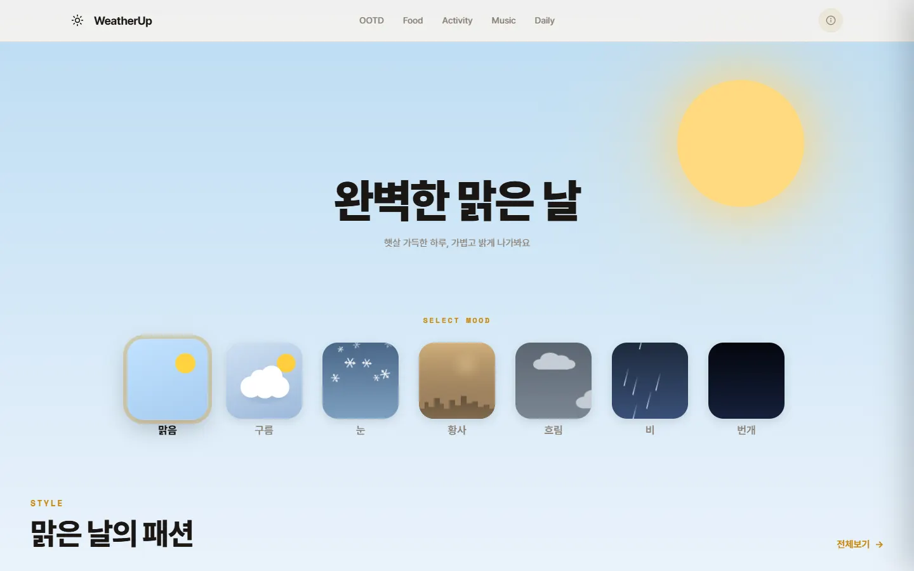

weatherUp
REACT WEB APP — 2026.04–06

01OVERVIEW
날씨 7종 중 하나를 고르면 배경과 색 테마가 바뀌고, OOTD·음식·활동·음악·일상 콘텐츠를 추천하는 React 웹앱입니다.
하나뿐인 React 프로젝트라 화면을 보여 주는 데서 멈추지 않고, 설계 판단을 직접 설명할 수 있는 상태로 되돌리는 중입니다. 커밋 대부분은 AI 코딩 도구와 함께 작성했고 공동 작성자로 기록되어 있습니다.
02EDIT LOG
-
PHASE 1
날씨 4종 테마 + 정적 데이터 추천
같은 날 로딩 화면과 GitHub Pages 배포 설정을 추가했습니다.
-
MUSIC
음악 기능 · 이미지 96장 로컬 번들
외부 URL로 불러오던 OOTD·음식 이미지를
public/images/로 옮겼습니다. -
PHASE 2
날씨 7종 테마 · Context API 전환
props 전달 구조를
WeatherContext·MusicContext로 바꾸고, canvas 배경을 CSS로 교체했습니다.
03TROUBLESHOOTING
-
ROUTING
GitHub Pages 하위 경로에서 라우팅이 맞지 않음
배포 주소가
/weatherUp/라 라우트가 루트 기준으로 잡혔습니다.BrowserRouter에basename={process.env.PUBLIC_URL}을 지정했습니다. -
CORS
일부 곡의 앨범 커버가 불러와지지 않음
iTunes API가 요청 제한에 걸리면 CORS 헤더가 빠져 fetch가 실패했습니다. JSONP로 바꾸고 실패 결과는 캐시하지 않아 다시 시도할 수 있게 했습니다.
-
AUTOPLAY
재생에 광고가 붙고 일부 사용자는 소리가 나지 않음
YouTube iframe을 iTunes 30초 미리듣기
<audio>로 바꾸고, 자동재생 차단을 피하려고 클릭 이벤트 안에서 바로 재생합니다.
04NEXT → 12.02
- 날씨 데이터정적 데이터API 연동 · 로딩/오류 처리
- 무드 선택새로고침 시 초기화저장 · 불러오기
- 첫 로드9.6MB원인 진단 후 축소
- READMECRA 기본 템플릿구조 · 트러블슈팅 문서
외부 날씨 API는 설계 문서(skill/api.md)만 있고 현재 배포본에는 연결되어 있지 않습니다. 오른쪽은 목표입니다.